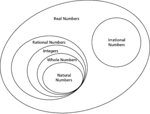

In Maths, Rational Numbers sound similar to Fractions and they are expressed in the form of p/q where q is not equal to zero. Any fraction that has non zero denominators is called a Rational Number. Thus, we can say 0 also a rational number as we can express it in the form of 0/1, 0/2 0/3, etc. However, 1/0, 2/0 aren’t rational numbers as they give infinite values.
Continue reading further modules to learn completely about Rational Numbers. Get to know about Types of Rational Numbers, Difference Between Rational and Irrational Numbers, Solved Examples, and learn how to Identify Rational Numbers, etc. In order to represent Rational Numbers on a Number Line firstly change them into decimal values.
Definition of Rational Number
Rational Number in Mathematics is defined as any number that can be represented in the form of p/q where q ≠ 0. On the other hand, we can also say that any fraction fits into the category of Rational Numbers if bot p, q are integers and the denominator is not equal to zero.
- Rational Numbers Worksheets
- Class 8 Rational Numbers NCERT Solutions
- Rational Numbers Class 8 Extra Questions
- Rational Numbers Class 8 Notes
- NCERT Exemplar Class 8 Maths Rational Numbers
- Class 7 Rational Numbers NCERT Solutions
- Rational Numbers Class 7 Extra Questions
- Rational Numbers Class 7 Notes
- Introduction to Rational Numbers
- What are Rational Numbers?
- Is Every Rational Number a Natural Number?
- Is Zero a Rational Number?
- Is Every Rational Number an Integer?
- Is Every Rational Number a Fraction?
- Positive Rational Number
- Negative Rational Number
- Equivalent Rational Numbers
- Equivalent Form of Rational Numbers
- Rational Numbers in Different Forms
- Properties of Rational Numbers
- Lowest Form of a Rational Number
- Standard Form of a Rational Number
- Equality of Rational Numbers using Standard Form
- Equality of Rational Numbers with Common Denominator
- Equality of Rational Numbers using Cross Multiplication
- Comparison of Rational Numbers
- Rational Numbers in Ascending Order
- Rational Numbers in Descending Order
- Representation of Rational Numbers on the Number Line
- Rational Numbers on the Number Line
- Addition of Rational Numbers with Same Denominator
- Addition of Rational Numbers with Different Denominator
- Addition of Rational Numbers
- Properties of Addition of Rational Numbers
- Subtraction of Rational Numbers with Same Denominator
- Subtraction of Rational Numbers with Different Denominator
- Subtraction of Rational Numbers
- Properties of Subtraction of Rational Numbers
- Rational Expressions Involving Addition and Subtraction
- Simplify Rational Expressions Involving the Sum or Difference
- Multiplication of Rational Numbers
- Product of Rational Numbers
- Properties of Multiplication of Rational Numbers
- Rational Expressions Involving Addition, Subtraction, and Multiplication
- Reciprocal of a Rational Number
- Division of Rational Numbers
- Rational Expressions Involving Division
- Properties of Division of Rational Numbers
- Rational Numbers between Two Rational Numbers
- How to Find Rational Numbers?
How to Identify Rational Numbers?
You need to check the following conditions to know whether a number is rational or not. They are as follows
- It should be represented in the form of p/q, where q ≠ 0.
- Ratio p/q can be further simplified and expressed in the form of a decimal value.
The set of Rational Numerals include positive, negative numbers, and zero. It can be expressed as a Fraction.
Examples of Rational Numbers
| p | q | p/q | Rational |
| 20 | 4 | 20/4 =5 | Rational |
| 2 | 2000 | 2/2000 = 0.001 | Rational |
| 100 | 10 | 100/10 = 10 | Rational |
Types of Rational Numbers
You can better understand the concept of sets by having a glance at the below diagram.

- Real numbers (R) include All the rational numbers (Q).
- Real numbers include the Integers (Z).
- Integers involve Natural Numbers(N).
- Every whole number is a rational number as every whole number can be expressed in terms of a fraction.
Standard Form of Rational Numbers
A Rational Number is said to be in its standard form if the common factors between divisor and dividend is only one and therefore the divisor is positive.
For Example, 12/24 is a rational number. It can be simplified further into 1/2. As the Common Factors between divisor and dividend is one the rational number 1/2 is said to be in its standard form.
Positive and Negative Rational Numbers
| Positive Rational Numbers | Negative Rational Numbers |
|---|---|
| If both the numerator and denominator are of the same signs. | If numerator and denominator are of opposite signs. |
| All are greater than 0 | All are less than 0 |
| Example: 12/7, 9/10, and 3/4 are positive rational numbers | Example: -2/13, 7/-11, and -1/4 are negative rational numbers |
Arithmetic Operations on Rational Numbers
Let us discuss how to perform basic operations i.e. Arithmetic Operations on Rational Numbers. Consider p/q, s/t as two rational numbers.
Addition: Whenever we add two rational numbers p/q, s/t we need to make the denominator the same. Thus, we get (pt+qs)/qt.
Ex: 1/3+3/4 = (4+3)/12 = 7/12
Subtraction: When it comes to subtraction between rational numbers p/q, s/t we need to make the denominator the same and then subtract.
Ex: 1/2-4/3 = (3-8)/6 = -5/6
Multiplication: While Multiplying Rational Numbers p/q, s/t simply multiply the numerators and the denominators of the rational numbers respectively. On multiplying p/q with s/t then we get (p*s)/(q*t)
Ex: 1/3*4/2=4/6
Division: Division of p/q & s/t is represented as (p/q)÷(s/t) = pt/qs
Ex: 1/4÷4/3 =1*3/4*4 = 3/16
Properties of Rational Numbers
- If we add a zero to a Rational Number you will get the Rational Number Itself.
- Addition, Subtraction, Multiplication of a Rational Number yields in a Rational Number.
- Rational Number remains the same on multiplying or dividing both the numerator and denominator with the same factor.
There are few other properties of rational numbers and they are given as under
- Closure Property
- Commutative Property
- Associative Property
- Distributive Property
- Identity Property
- Inverse Property
Representation of Rational Numbers on a Number Line
Number Line is a straight line diagram on which each and every point corresponds to a real number. As Rational Numbers are Real Numbers they have a specific location on the number line.
Rational Numbers Vs Irrational Numbers
There is a difference between Rational Numbers and Irrational Numbers. Fractions with non zero denominators are called Rational Numbers. All the numbers that are not Rational are Called Irrational Numbers. Rational Numbers can be Positive, Negative, or Zero. To specify a negative Rational Number negative sign is placed in front of the numerator.
When it comes to Irrational Numbers you can’t write them as simple fractions but can represent them with a decimal. You will endless non-repeating digits after the decimal point.
Pi (π) = 3.142857…
√2 = 1.414213…
Solved Examples
Example 1.
Identify whether Mixed Fraction 1 3/4 is a Rational Number or Not?
Solution: The Simplest Form of Mixed Number 1 3/4 is 7/4
Numerator = 7 which is an integer
Denominator = 4 which is an integer and not equal to 0.
Thus, 7/4 is a Rational Number.
Example 2.
Determine whether the given numbers are rational or irrational?
(a) 1.45 (b) 0.001 (c) 0.15 (d) 0.9 (d) √3
Solution:
Given Numbers are in Decimal Format and to find out whether they are rational or not we need to change them into fraction format i.e. p/q. If the denominator is non zero then the number is rational or else irrational.
| Decimal Number | Fraction | Rational Number |
| 1.45 | 29/20 | Yes |
| 0.001 | 1/1000 | Yes |
| 0.15 | 3/20 | Yes |
| 0.9 | 9/10 | Yes |
| √ 3 | 1.732… | No |
FAQs on Rational Numbers
1. How to Identify a Rational Number?
If the Number is expressed in the form of p/q where p, q are integers and q is non zero then it called a Rational Number.
2. Is 5 a Rational Number?
Yes, 5 is a Rational Number as it can be expressed in the form of 5/1.
3. What do we get on adding zero to a Rational Number?
On Adding Zero to a Rational Number, you will get the Same Rational Number.
4. What is the difference between Rational and Irrational Numbers?
Rational Numbers are terminating decimals whereas Irrational Numbers are Non-Terminating Decimals.